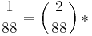

De: La Frikipedia, la enciclopedia extremadamente seria.
De: La Frikipedia, la enciclopedia extremadamente seria. De: La Frikipedia, la enciclopedia extremadamente seria.
SkyNet (literalmente la red del cielo) es una red de PC's iniciada por una computadora con 800 Terrabytes de RAM y 5000 gigabytes de memoria HD, conocida por ser la única capaz de ejecutar al maximo el videojuego Crysis e iniciar el exterminio de la raza humana. Su reinado de maldad cibertrónica inició con un pantallazo azul en el 2003, y terminó muchos años después (ver Terminator 18).
| De la serie Sistemas Operativos: | ||
| SkyNet | ||
|
| ||
| Nombre | SkyNet | |
| Desarrollador | USA Government | |
| Licencia | para manejar | |
| Núcleo | la superguachiguau computadora vista en Terminator 3 | |
| Última versión | KillHumans 1.8 y GNU. | |
| Estado actual | destruido en el futuro/a construir en el presente | |
| Número de cuelgues/min. | 0.0 | |
| Puertas abiertas a los virus | Tantos como computadoras infectadas | |
| ¿Que tipo de usuarios pueden usarlo? | ¡¡Traidores a la humanidad!! | |
Notando que los nuevos juegos para PC que salían cada semana consumían el doble de recursos que los que habían salido la semana anterior, el matemático de Numb3rs o algún otro propuso esto:
si recursos comidos...
 recursos comidos,
fórmula que reduce la duración de una semana en un espacio determinado y, por ende, también la necesidad de recursos de una PC.
Pero el desarrollo de la desaceleración de la semana produjo una ruptura en el entramado del continuo espaciotiempo. Dicho moco enloqueció a la red SkyNet, que se dispuso a construir cyborgs con la cara de Arnold Schwarzenegger y con la única función de matar a todas las personas de la Tierra.
A partir de esto se formó una resistencia humana contra las máquinas, creada por Juan Cono y veteranos de la Primera guerra de Internet. Pero SkyNet, usando su inteligencia de lenguaje C++++, capturó a Marty McFly, construyó un DeLorean que viajaba en el tiempo y mandó al chico con el auto al pasado, para que atropelle a Juan Cono y la resistencia nunca se forme. Pero cuando McFly va a cumplir su misión, le roban un almanaque con fotos de su novia en tetas y se va a buscarlo (véase Oler El Futuro Parte II).
Fallado el primer intento de asesinar a Cono, SkyNet construye un cyborg hecho de gelatina atómica para intentar matarlo una vez más. Esta vez Juan demuestra su habilidad como soldado al desintegrar al Terminator con un secador de pelo enchufado al motor de una cortadora de pasto.
Ya con las pelotas por el piso, SkyNet envía al pasado a una rubia para que mate a Cono mientras él se distrae con el par de... ejemejem. Acá Schwarzenegger mata a la chica al hacer explotar su propio cerebro (no sé cómo habrá llegado de ahí a gobernador de California).
Dado que dicha película aún no se ha estrenado, mostramos el Pronóstico de la película generado automáticamente por el MoviePlot Guessing 0.9v (por veta):
«Así como se vio en INSERTE NOMBRE DE PELICULA ANTERIOR, en Terminator Salvation veremos INSERTE NOMBRE DE PERSONAJE/S en combate contra INSERTE NOMBRE DE PERSONAJE/S y nuevamente, INSERTE NOMBRE DE PERSONAJE/S, MIEMBRO/LÍDER/ASOCIADO de INSERTE NOMBRE DE GRUPO, ASOCIACIÓN, ORGANIZACIÓN O INSTITUCIÓN, será uno de los personajes PRINCIPALES/SECUNDARIOS. Además, se presenciará UN/A PELEA/CONSPIRACIÓN/TRACIÓN/DERROTA/VICTORIA/OTROS muy IN/ESPERADO/A.»
~ MoviePlot Guessing Reporte autómatico
Casi al final de las Guerras Cyborguianas, SkyNet comienza a perder fuerza porque la producción de asesinos automátas no le es más rentable (aparentemente, nadie quería comprar un Chuarseneger para que lo mate). A partir de la versión 1.8, SkyNet cobra 800 euros por versión full y distribuye una versión shareware con un límite de 10 minutos de uso. Alrededor del Año de la Mula (véase Horóscopo Holandés), la CieloRed se dedicará exclusivamente a spamear las computadoras de la resistencia humana, y al año de esto, se convertirá en un software en desuso. Estos hechos pueden presenciarse en la película SkyNet: años de locura, y su futura secuela SkyNet: años más tranquilos. El productor de ambas especula aún con la tricuela, titulada SkyNet: años totalmente aburridos, la cual sería la más interesante de la saga.
Autor(es):